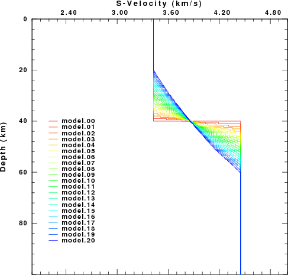
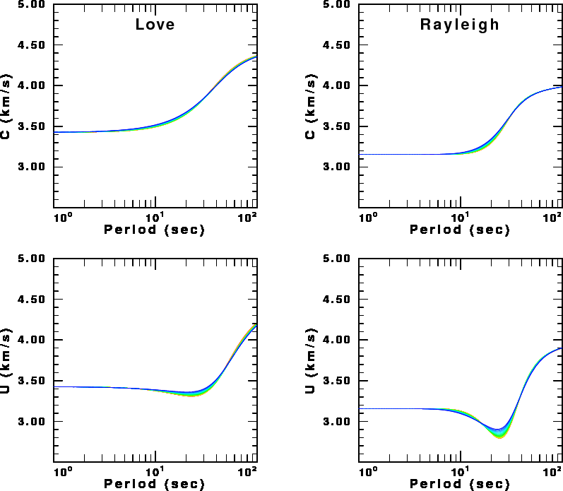
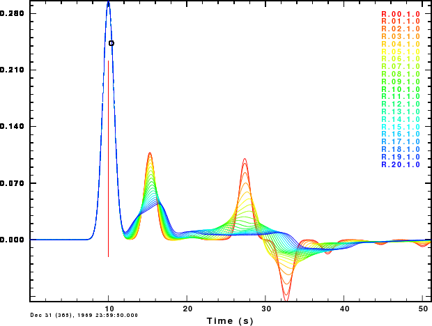
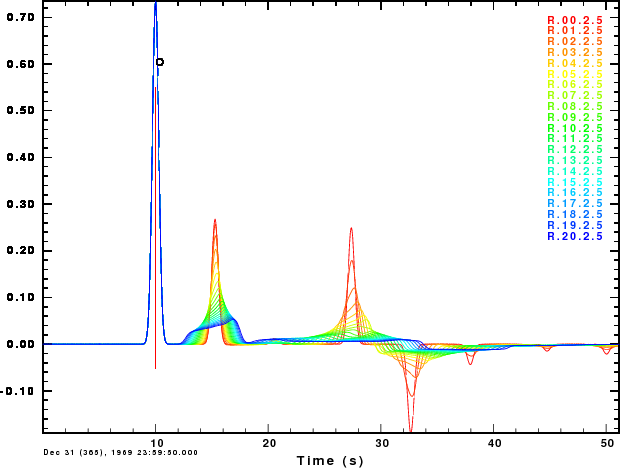

Receiver functions and surface-wave dispersion provide information about shallow Earth structure. However, when inverting observations, the question arises as to the number off layers to be used in the inversion. This is critical when the receiver function cannot be fit by a small number of layers.
The object of this exercise is to examine the sensitivity of surface wave dispersion and the receiver functions on a gradational Moho rather than a sharp Moho. To accomplish this, different velocity models are created as follow:
Download the package RFTN2.tgz. Then do the following:
gunzip -c RFTN2.tgz | tar xvf - cd RFTN2 ./DOIT
The script will create the figures shown below. The script requires the FORTRAN compiler gfortran, the CPS programs sprep96, sdisp96, sregn96, slegn96, sdpegn96, hrftn96, gsac and plotnps and the ImageMagick package program convert to transform the EPS files to a PNG image.
The first figure shows the velocity models considered.
|  |
In the figure the colors indicate the progression from a sharp Moho to a gradational Moho.
The next set of figures use the same color scheme to show the Love and Rayleigh, phase (C) and group (U) velocity dispersion for the different models.
There is little sensitivity to the different models, except at the group velocity minima. Note that the maximum change is at a period of 20-30 sec, for which the signal wavelength is about 60-100 km for models which differ at depths on the order of one-third to one-half a wavelength.
|  |
The final set of figures show the receiver functions for a ray parameter of 0.07 sec/km for two Gaussian filter parameters, ALP=1.0 and ALP=2.5. The receiver functions are very sensitive to the nature of the Moho. The first "bump" does not change since its amplitude is only a function of the properties at the surface. However, the second "bump", corresponding to a PS is affected. The increasing width indicates that the top and bottom of the transition affect the signal. The last two arrivals, PPPS and PPSS+PSPS, are strongly affected since these involve reflections from the Moho, and gradients do not reflect well for near-vertical incidence.
These figures indicate that one can quickly look at a receiver function and judge whether the Moho is sharp.
|  Receiver functions for ALP=1.0 |
|  Receiver functions for ALP=2.5 |
This example shows how synthetics can provide a sense of how sub-surface structure affects the observed receiver functions and dispersion. One can also perform similar studies that investigate the effect of using other values of the Gaussian filter parameter, ALP, layer thickness.
An interesting exercise would be to consider a low velocity surface layer which is due to sediments or ice.